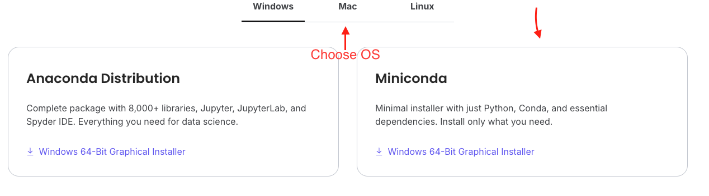
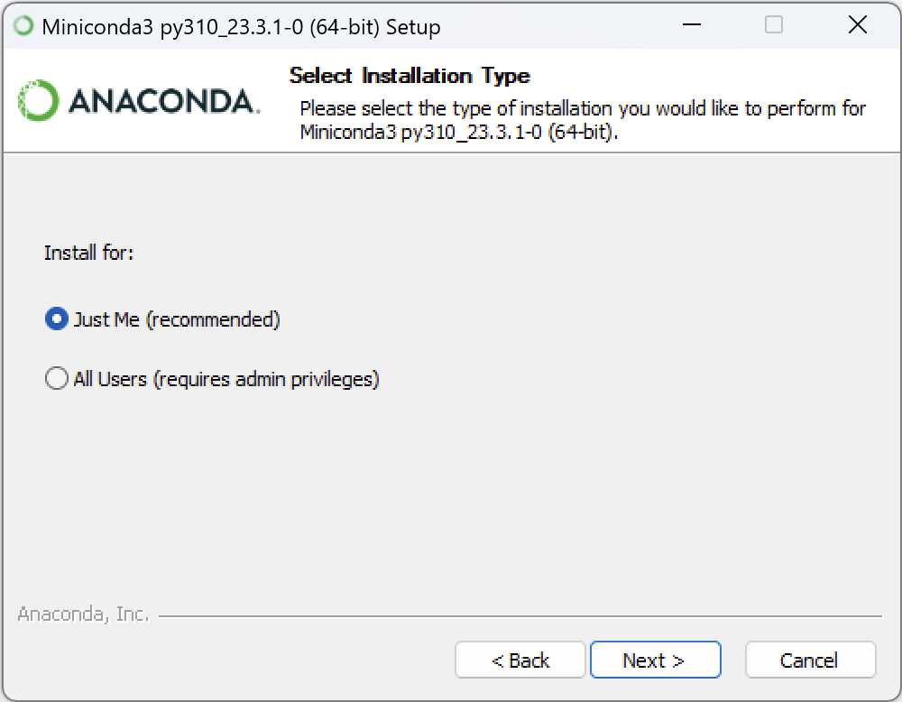
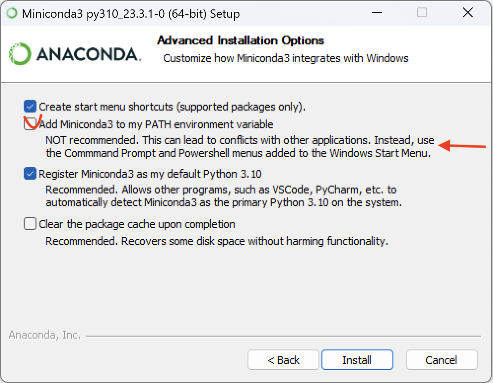
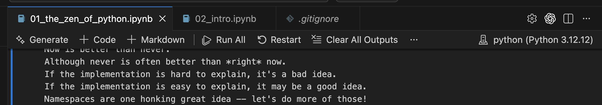

Python
Lab Sessions
Python
Python (Miniconda)
Download
Download Miniconda from the official website:
download link

Choose the installer for your operating system:
- Windows: Miniconda \(\rightarrow\) Windows 64-Bit Graphical Installer
- macOS: Miniconda \(\rightarrow\) 64-Bit (Apple Silicon) Graphical Installer
Windows Installation
Installation Steps
Download the Miniconda installer (
.exe).
Run the installer. 
During setup, enable:
- Add Miniconda to my PATH environment variable
- Register Miniconda as the system Python

Complete the installation and restart your terminal.
Verify Installation
Open PowerShell or Command Prompt and run:
conda --versionThen test the Python installation:
python --versionCheck whether pip is installed correctly:
pip --versionmacOS Installation
Installation Steps
- Download the macOS installer (
.pkgfor Intel,.shfor Apple Silicon). - If using the
.pkgfile, run it normally. - If using the
.shinstaller:- install homebrew:
/bin/bash -c "$(curl -fsSL https://raw.githubusercontent.com/Homebrew/install/HEAD/install.sh)" - install miniconda:
brew install --cask miniconda
- install homebrew:
- Accept the license terms.
- Allow Miniconda to initialize Conda in your shell.
- Restart Terminal.
Verify Installation
Run:
conda --versionThen verify Python:
python --versionFor Mac users, it might be required to use python3 instead of python
python3 --versionCreating and Managing Environments
Create a New Environment
Example environment with Python 3.13:
conda create -n myenv python=3.13Activate Environment
conda activate myenvDeactivate Environment
conda deactivateList Environments
conda env listInstalling Packages
Install a Package
conda install numpyInstall Multiple Packages
conda install pandas matplotlib seabornInstall Using pip
Inside an activated environment:
pip install requestsUpdating Conda
conda update condaRecommended Packages for the Course
- pandas
- numpy
- matplotlib
- seaborn
- scikit-learn
- jupyter
- plotly
- folium
- ipykernel (for VS Code integration)
Example install:
conda install pandas numpy matplotlib seaborn scikit-learnWe will explore these during class.
Adding Environment to VS Code
After activating the environment:
python -m ipykernel install --user --name myenv --display-name "Python (myenv)"Then in VS Code:
- Open Command Palette (
Ctrl+Shift+PorCmd+Shift+P) - Select Python: Select Interpreter
- Choose Python (myenv)
- In the bellow image it is just a
python, meaning that my virtual environment name ispython
